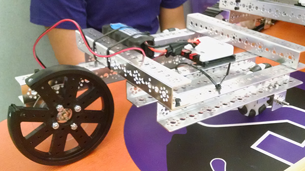
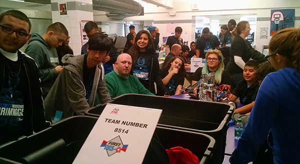
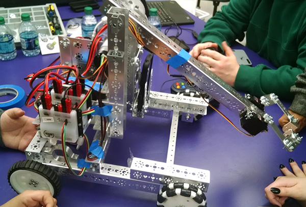

Whether or not we were allowed to compete, we felt that it would be worthwhile to go to the scrimmage, if only to see how we compared to other teams. Climbing the mountain is the hardest mechanical design challenge so far, and we were able to see their solutions.
Many teams had treads like ours, with different arrangements of idlers, while other teams had completely different solutions. RoBo Bison Team #8811 had a particularly ingenious way of moving up the churros. 
Team #8514 used a wheel design that we had discarded early in the design process, with surprising results.
Their front wheels were omni wheels, and their back wheels were ridged for more traction. once they got high enough on the mid-zone, they used their claw arm to reach higher and pull themselves up.


"I specifically asked if they had problems with falling sideways down the mountain, and they did say that they had to be careful to drive up at an angle as close to 90 degrees as they could.
One team had programming trouble, and a few of our members went over to help with their problems. They were using app-inventor, which made it a little hard to and had a well known problem with their wifi-conectThis team ended up taking home a trophy at the competition